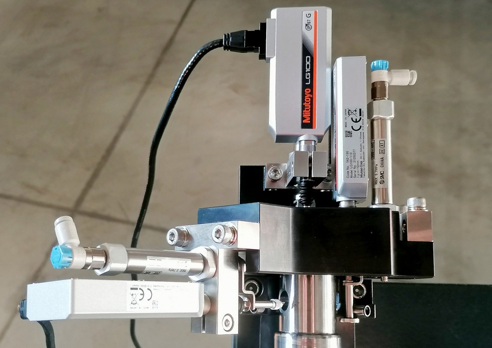
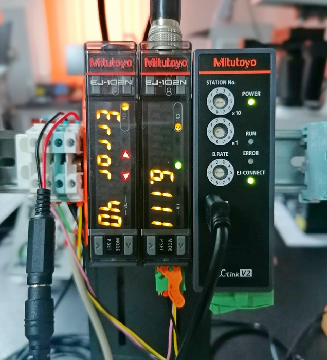
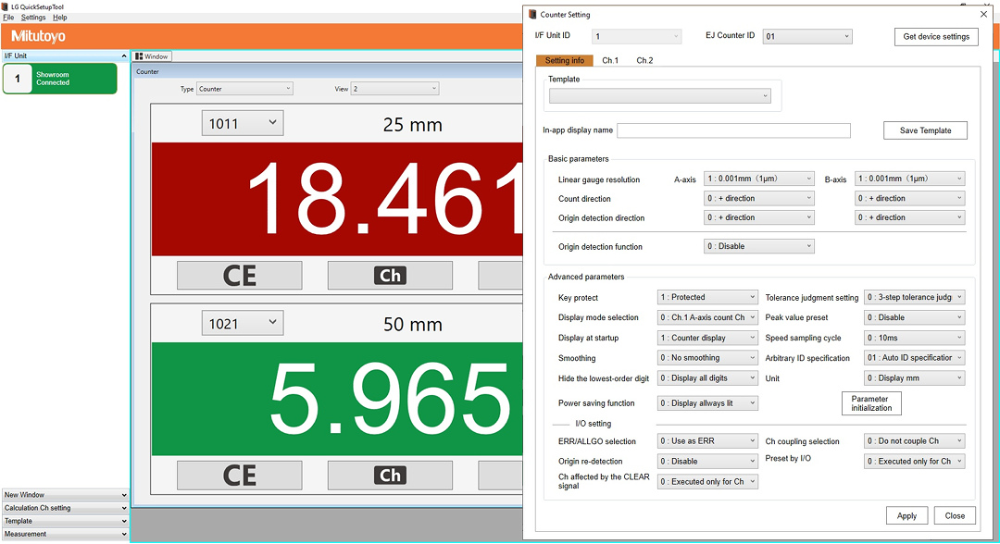
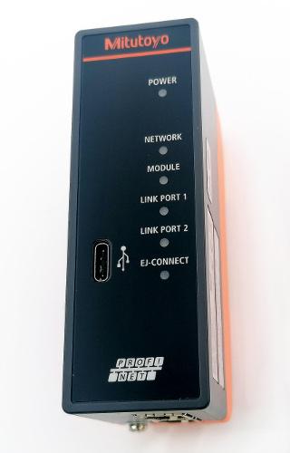
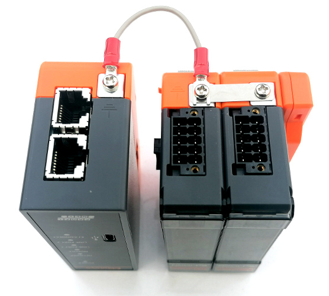

Nová řada lineárních snímačů a EJ counterů
Tato stránka je průběžně doplňována o nové informace na základě potřeb uživatelů a na základě vzorových aplikací, které jsou vytvářeny v naší centrále v Teplicích.
Od roku 2021 je k dispozici zcela nový ekosystém inkrementálních lineárních snímačů a vyhodnocovacích jednotek (counterů, čítačů), který vychází z předchozích řad a se kterými je nadále funkčně kompatibilní. Nejvýraznější změny, který tento systém přináší ve srovnání se starým provedením, jsou:
Snímače
- zvýšení přesnosti
- další zlepšení mechanických vlastností (životnosti) a odolnosti proti vlivu prostředí
Čítače
- podstatná miniaturizace
- modulární provedení se zástavbou na DIN lištu
- široká konektivita (připojení k PC Win/Linux, CC-link, Profinet a v budoucnu další)
Snímače
V současné době jsou dostupné snímače řady LG-100 v základním provedení s rozsahy 10, 25 a 50 mm a s rozlišením 0,1, 0,5 a 1 µm. V průběhu roku 2022 budou dostupné i "tužkové" snímače řady LG-200.
Přesnost snímačů LG-100 je 0,5 µm pro model s rozlišením 0,1 µm, případně (1,5 +L/50) µm. Zvýšila a mechanická životnost vedení vřetene, která činí 30 milionů cyklů (!) pro model 25 mm. Proti předchozí řadě je zvýšena i odolnost proti vlivu prostředí, je dosaženo úrovně IP 67 G. Písmeno G znamená odolnost nejen proti vodě, ale rovněž proti ropným látkám, používaným zpravidla jako maziva a emulze.

Na snímku hlava přípravku osazená třemi snímači LH-100 10 mm s pneumatickými zdvihacími jednotkami. Bez tlaku vzduchu jsou snímače ve zdvižené poloze. Přivedením vzduchu dojde ke spuštění vřeten s měřícím dotekem na měřený díl.
Zdvihací jednotky včetně montážního T kusu lze objednat jako příslušenství ke snímačům.
Nové řady snímačů LG-100 a LG-200 nahrazují předchozí snímače řad LGD, (LGF), LGK. To znamená, že při náhradě těchto snímačů ve starších aplikacích bude třeba použít již nové řady snímačů LG..., které jsou rozměrově prakticky totožné. Připojovací konektor je ale odlišný, je menší pro nové countery EJ. Proto je potřeba pro připojení na starší countery typu EH, EH a další použít redukci 21HZA193 (toto číslo platí pro snímače bez referenčního bodu).
Čítače
Modul čítače EJ-102N (542-080)
Základní funkční jednotkou je modul čítače EJ-102N. Má vstupy pro dva snímače (shora) systémový konektor pro přívod napájení a IO výstupy (standardní příslušenství - Phoenix contact DFMC 1,2/5-ST-3,5-LR(Mitutoyo 21HZA158), příp. DFMC 1,2/5-STF-3,5). Napájení modulu je 10 - 27 V, logické výstupy jsou typu "otevřený kolektor" (zatižitelnost 30 mA max.). Uvedený modul lze konfigurovat pomocí čtyř tlačítek, které jsou umístěny pod odklápěcím průhledným čelním panelem.
Modul je schopen pracovat s jedním snímačem nebo se dvěma snímači, v tomto případě v režimech:
- dva samostatné snímače (každý s vlastními mezními tolerancemi - pokud je použito)
- součtové nebo rozdílové uspořádání snímačů. Ve výsledku se tak dvojice snímačů chová jako jediný snímač s jedinou výstupní hodnotou.
Snímače v libovolném z uvedených zapojení mohou pracovat ve standardním režimu (aktuální hodnoty) nebo v režimu zachycení mezních hodnot (MIN, MAX, TIR). U každého snímače lze použít třístupňové toleranční vyhodnocení s výstupem na IO konektor. IO výstup tolerančího vyhodnocení je jen jeden (3 stavy, 3 vývody), takže výstupní stavy odpovídají tomu snímači, jehož hodnota se právě zobrazuje ne displeji (lze přepnout).
Protože modul čítače umí zobrazovat jen jednu hodnotu, lze při dvou zapojených snímačů v samostatném režimu přepínat na displej hodnotu z kanálu 1 nebo 2 pomocí tlačítka pod předním krytem.
Jednotlivé čítače je možné sdružovat ("stackovat") až do počtu 8 jednotek. Při sdružení dojde k propojení všech jednotek pomocí konektoru na bocích modulů, takže např. přívod napájení se realizuje přivedením napětí pouze na jeden modul. V souvislosti s tolerančním vyhodnocením jsou na jednotlivých modulech samostatné IO výstupy dílčího tolerančního vyhodnocení z jednotlivých snímačů, avšak k dispozici je i generální signál ALLGO, který je aktivní v případě, že tolerance ze všech jednotek jsou OK. Toto velmi usnadňuje a zjednodušuje řešení automatizačních úloh s celkovým posouzením GO / NOT GO.
Popis a rozložení vývodů IO konektoru (pinout) je zde.

Na snímku je předváděcí zapojení se dvěma čítači a jednou komunikační jednotkou typu CC-link (vpravo). K levému čítači není připojen žádný snímač, proto signalizuje stav Error 40. Pravý čítač aktuálně zobrazuje hodnotu z kanálu 2 (žlutá LED nahoře, Ch.2), je aktivní toleranční vyhodnocení a výsledek je OK (zelená LED u číslice 6).
Komunikační jednotky
Komunikační jednotky slouží jako prostředník pro datovou komunikaci mezi čítači a výpočetní či automatizační technikou (PC, PLC, specializovaná elektronika, datové přenosy).
Použití komunikačních jednotek není povinné a čítače spolu se snímači mohou fungovat i bez ní.
USB (21HZA149)
Všechny komunikační jednotky mají USB-C port pro připojení jednotky k počítači. Komunikační jednotka USB je tak základní jednotkou pro komunikaci modulů čítačů s počítačem.
Po instalaci driveru se jednotka v počítači jeví jako Virtuální Com Port (VCP) a lze s ní snadno komunikovat pomocí rozsáhlé sady ASCII příkazů. Každý připojený modul čítačů je adresován jedinečným číslem (01 - 08), přistupovat lze samozřejmě i na každý čítač z dvojice připojitelných snímačů.
Popis příkazů realizovatelných přes VCP je zde.

Pro PC je zdarma dostupná aplikace LG Quick setup tool, která umožňuje provádět snadné nastavení jednotek a rovněž práci s aktuálními daty, takže může sloužit jako plnohodnotná uživatelská aplikace. Na obrázku je hlavní informační okno s údaji ze snímačů, vpravo otevřené okno pro nastavení parametrů čítače 01 (= na první pozici od komunikační jednotky).
CC-link (21HZA186)
Komunikační jednotka CC-link má kromě USP-C portu rozhraní CC-link. Fyzicky se jedná o rozhraní podobné RS-485.
CC-link je v Evropě celkem vzácný, je rozšířený zejména v Asii, používají ho třeba řídící jednotky Mitsubichi, Panasonic a jiné.
Profinet (21HZA187)
Komunikační jednotka s implementovaným protokolem Profinet, který komunikuje pro ethernetové síti. Na jednotce jsou tedy vedle USB-C i dva standardní síťový konektor RJ-48.
 . 
Komunikační jednotka Profinet a spodní pohled na dosud nespojené jednotky. V mezeře jsou vidět boční konektory, které propojují moduly mezi sebou. Na spodní straně se všimněte propojení stínění a zemí pomocí páskových propojek (čítače) a pomocí kablíku u komunikační jednotky. Nezapomeňte toto při montáži zapojit, zvýší se tím mj. odolnost celé skupiny proti EMG rušení.
Důležitý je rovněž zakončovací terminál, což je oranžový blok "přicvaknutý" na opačném konci než je komunikační jednotka. Zajišťuje impedanční přizpůsobení komunikační sběrnice mezi jednotlivými bloky a jeho použití je pro správnou funkci nezbytné. Tento terminál je součástí dodávky jakékoliv komunikační jednotky.
Pro konfiguraci a použití Profinet zařízení je třeba mít příslušný GSDML soubor, který definuje vnitřní datové struktury komunikační jednotky. Uvedený soubor je k dispozici zde.
Připojení EJ-counterů do prostředí a popisu komunikace je věnován samostatný článek.